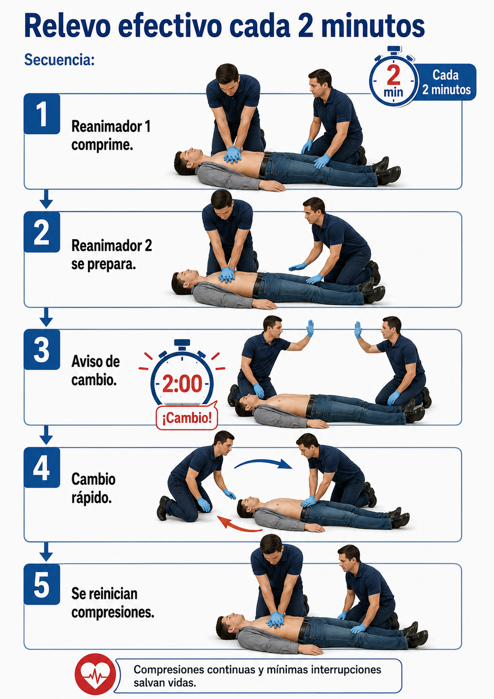

Fatiga del reanimador y relevos
Realizar compresiones torácicas es físicamente exigente. Después de un tiempo, el reanimador puede fatigarse y disminuir la calidad de las compresiones.
Si hay más de un reanimador, se recomienda cambiar aproximadamente cada dos minutos o antes si aparece fatiga.
El relevo debe hacerse con interrupciones mínimas.
El mejor momento para cambiar de reanimador es durante el análisis del DEA o inmediatamente después de una descarga, porque ya existe una pausa necesaria.

Un reanimador fatigado puede hacer compresiones menos efectivas.
Ensaya el cambio de reanimador con una pausa menor a 10 segundos.
El relevo debe mantener la continuidad de la RCP.